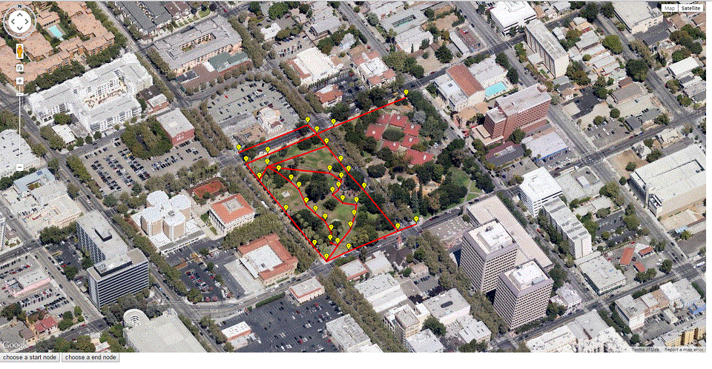
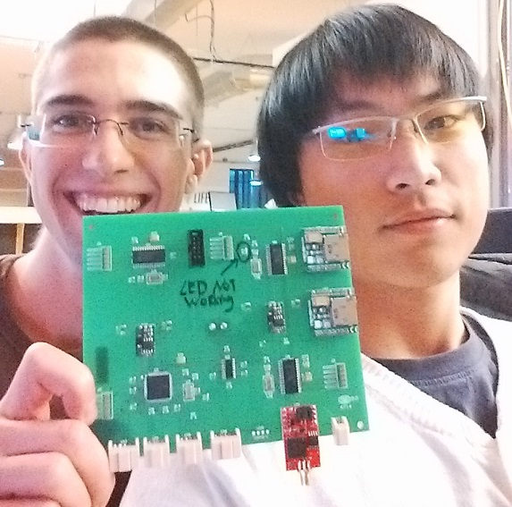
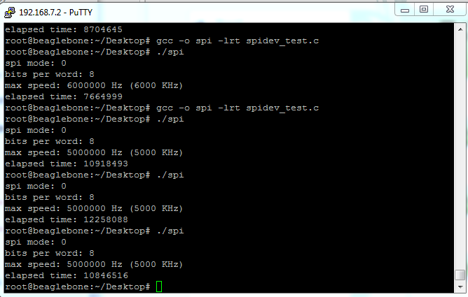
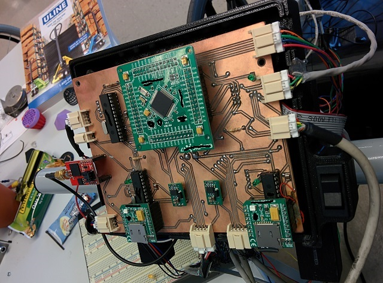
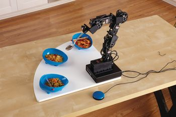
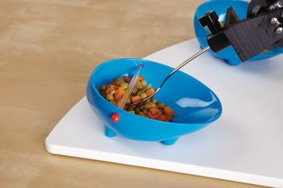
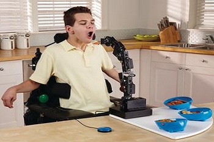

3D image processing: PCL and Kinect
8/11/2015During my internship at ABB Robotics Shanghai, I participated in a 3D image processing project used in assembly lines.
Originally, one of their customers used their old set up with an expensive 3D laser sensor which can only output point clouds in XYZ and XYZI formats. They wanted to recognize boxes of two different sizes. However, when two boxes were put close to each other, their (normal estimation) algorithm failed. Therefore, the lead engineer assigned me to write code to explore color based segmentation with Microsoft Kinect. Microsoft Kinect gave very good results because it outputs point cloud in XYZRGB format. Adjusting parameters in region growing algorithm is very crucial. Here are two clouds captured by Kinect. The objects to be segmented are two white boards that are close to each other.
 |
 |
|---|---|
| boards with less than 5mm gap | boards with no gap |
 |
 |
In order to further compare RGB and Normal based segmentation algorithm on the original sensor, I multiplied intensity with some constants to simulate RGB elements. The results are obvious that in some situations, normal based segmentation does not work(red region is invalid).
 |
 |
|---|---|
| Normal based segmentation | Color based segmentation |
 |
 |
Conclusion: Even though only normal estimation has multi-thread support, the speed difference isn't very big (~100ms). The general speed however, is largely related to the size of the cloud. In the duration of my internship I wasn't able to explore the GPU implementation (PCL 1.72 doesn't officially support GPU). I think the GPU speed will easily out-match any multi-thread implementations. The color based segmentation is very sensitive to ambient light, also Kinect sensor has limited depth resolution. Parameters need to be adjusted under real assembly line to find the optimal values. Well, Kinect works and it saves money.
Assistive Gaze-tracking Headset
4/16/2015This a senior design project with my friends at the University of Pittsburgh in Spring 2015.
The goal of this project was to make a low cost device to help people with no or minimal limb control to
interface a computer. It utilizes a webcam (PS3eye) and a 9-dof (mpu-9150) to capture eye movement and head
orientation. The initial plan was to combine both measurements but we ran out of time before the Design Expo.
Eye tracking worked fine in x-direction. In y-direction, eye movements were too small to give us any useful
information. However, the head tracking by itself could manipulate mouse very well, with the help of an adaptive low
pass filter.

 The design specs and poster can be downloaded.
The University of Pittsburgh owns all the hardware but we own the technology and decided to make it public.
The design specs and poster can be downloaded.
The University of Pittsburgh owns all the hardware but we own the technology and decided to make it public.
A crowd-sourcing sidewalk mapping tool: Crowdvu(android-based)
4/1/2015CrowdVu is a crowdsourcing tool focused on improving accessibility and walkability along sidewalks and other pedestrian pathways. It allows users to report the locations of hazards along these pathways. Users can then visualize these hazards on a map, including those hazards submitted by other users. This allows the user to understand where hazards are located along their path. Future versions of CrowdVu will include navigation capabilities.
The app is on the Play Store.
A crowd-sourcing sidewalk mapping tool (web-based)
1/13/2015As a part of the pedestrian way finding application, a side-walk mapping tool was created to allow the public to map sidewalks in their community. Even though google has a great map, accessibility info is missing. Here at PathVu, we will take the lead.
The idea is to map existing sidewalk routes by letting anyone create nodes and connect them on an intuitive user interface. The nodes, combined with sidewalk accessibility measurements, can be used to create a way finding tool. The Beta of this tool will be released soon for testing even though it's not connected to any actual data-base.
The idea is to create graphs and generate a vertices file containing connectivity. The cost of edges will be determined after we mapped the sidewalk. Dijkstra's algorithm can then be used to determine a shortest path between two points. Basic functionalities such as choosing a start/end node, deleting previous nodes and viewing existing routes will be provided as a part of the user interface on a web page. However, several challenges such as how to merge mappings from different users and how to efficiently assign blocks to users remain under discussion.
A cape for Beaglebone
1/10/2015Because the new data acquisition system based on Bealegbone proves to be working very well and the potential of adding new features is promising, we decided to make a cape for Beaglebone carrying a dsPIC. I started creating a new PCB and tried to shrink down the size to be the same as Beaglebone itself. Here is a simplified layout of the board. It mimics the shape of a Beaglebone and clicks on perfectly. Quadruple micro-controller design will be eventually be replaced.

Fine details were removed due to PathVu's copy rights. Different connectors will be used in this design to improve the performance under continuous vibration.
High Speed Data Link
12/19/2014During the development of the new PathMeT device, I had to make sure that measurements were reliably sent to Beaglebone as fast as possible from a dsPIC. Because the data link was based on SPI bus, the full-duplex communication increased the difficulty of coding and debugging. I was having great progress testing Beaglebone Black's SPI's performance with the following setup:
Slave: dsPIC33EP @ 70MIPS Host: Beaglebone Black Debian SPI0 (max clock 48 MHz)
The dsPIC uses a 2048 Byte circular buffer to store measurement packages (128 Bytes). When read and write pointers meet each other, old measurements could be erased, which was not preferable for continuous surface profiling. In order to make sure Beaglebone receives all the measurements, the dsPIC generates pulses when new measurements are available. Because Beaglebone sometimes misses the signal during CPU intensive tasks, a recovery algorithm was devised. At the end of the measurement package, the write and read pointer positions are added and therefore can be compared with pulses received by Beaglebone. It then recovers the missing signals. The system is becoming increasingly complex. The Beaglebone is taking pictures from a web cam, translating and verifying measurements and logging everything onto a flash drive while uploading everything to a cloud. Not missing picture is crucial for high resolution surface profiling.
Reliability testing The data logged by Beaglebone was analysed using a C# program to check time delay between each measurements based on dsPIC's timer. In addition, the encoder difference, accelerometer, gyro, magnitometer and laser were plotted to verify if there are any corruption in data logging. results: Because dsPIC33 family limits the SPI bus speed to a most 35MHz(half of the system clock speed), 24MHz was chosen so dsPIC has enough clock cycles in interrupt routines to load measurements. The transaction for each packet(128 Byte, seven measurements) takes around 0.05ms, which makes a 2KHz surface profiling feasible.
Our first professionally-made board
12/14/2014We received five professionally made boards for PathMeT this week and they work perfectly(except one LED was soldered backwards by accident)!  Co-design: Ian McIntyre The new board is mainly changing most of the through-hole components into surface mount ones to increase reliability under vibrations. During data collection in DC, we noticed sometimes the SD card slick would disconnect because of poor solder joints. My boss Eric Sinagra is going down to DC today again and I hope everything will be good!
IMU with Kalman Filter
5/13/2014This project aims at finding an accurate way to provide heading using 9-DOF IMUs. Because different applications have different requirements, this project
, as a part of PathMeT, requires accurate and fast readings under dynamic environment(+-0.3g).
Under high vibrations, integrating gyro measurements will result in over-shoot or under-shoot.
This is the first try to use Kalman filter with dynamic tuning in order to minimize the converging time.
1: Static error: +-0.2 deg
2: Dynamic error under high external acceleration: +-0.5deg when external acceleration is +- 0.4g
3: Drop test
When the drop creates rapid change in gyro readings (+-200deg/s), the filter takes some time to converge to true value because the error in gyro is so big. The overshot also happens but gets corrected within 2 seconds. When the drop only changes gyro readings within +-100deg/s, the overshot is within 2degs.
Sampling frequency: 100Hz
Setup: Arduino micro + 6DOF(MinIMU-9 v2 from pololu)
As you can see in the video, the setup is very easy to implement even though it is not ideal due to inclined desk, vibration from AC unit and so on. But it's a proof of concept that the implemented kalman filter works but has certain limitations. The sensor board is calibrated under the same environment.
I also tested some other filters such as Madgwick's and Mahony's DCM filters. It turns out that Mahony's filter has a constant converging rate whereas Madgwick's filter converges according to coefficients chosen. Madgwick's filter will drift over time if there are continuous vibrations over 0.3g. The drift is about 1 deg/15 sec (lab environment, 300HZ sampling rate, dynamic tuning according to linear acceleration). Mahony's filter, on the other hand, doesn't drift. It is however more susceptible to linear acceleration. The error is around 4 deg/0.3g (lab environment). I decided to use Madgwick's filter because it is less computational intensive and easy to implement and tune in real-time. Unfortunately I didn't record a video to compare all three algorithms but during data collecting trip in Washinton DC (real-world environment), the incline data looked pretty good.
Conclusion: Because the Madgwick's filter is computational effective and easy to implement, in the future I decide to create an IMU module for PathMet running this algorithm on board using a dsPIC chip. Also, I will try to ramp up the sampling rate to 1 KHZ in order to get a better transient response (analogous to experiencing a depression on broken sidewalks). In real-world situation, the IMU on PathMet does not usually experience continuous vibration in X or Y direction (cross slope and running slope) so pitch and roll should converge to true value quickly. If there exists really bad sidewalk, we will try to use a running average filter and look at laser data more.
Project credits: Kevin J. Chau (intern at HERL)
Proof of concept: logging data using a Beaglebone Black and a dsPIC micro-controller
1/05/2014Because a high speed data acquisition device need to interface sensors and log data on storage unit, I found it hard to only use micro-controllers to manage files with out any help from an OS. It is possible that one or more micro-controllers can work together but that increases the complexity in debugging and developing more features in the future. Here is a sub-project to showcase that using a embedded Linux computer with a dsPIC can be advantageous in terms of speed and simplicity.
Setup: 1.Beaglebone Black kernel 3.8.13 2.Kernel that supports LCD and SPI at the same time 3.LCD4 cape 4.pic18f4550 at Vcc=3.6v, external crystal=4Mhz, CPU Clock=48Mhz.
Beaglebone Black as SPI master (using spi0 on P9 header). Master: SPI max allowed frequency = 16Mhz. Actual frequency = 5Mhz (because pic18f cannot run as fast at 3.3v) Pic18f as SPI slave. The master requests 18bytes for 100000 times and logs all received bytes at each iteration. The time elapsed is displayed at the end.
Results: Total transaction of 1800000Bytes is 11sec on average when BBB gets power supply from USB. 1800000Bytes/11sec=163Bytes/ms. At spi frequency above 5Mhz, there are many corruptions in the logged file. It looks like the pic18f cannot keep up refilling spi buffer. The time elapsed shown below is in usec. Usually writing to an old file is a little bit faster. Below is part of the testing results.
Picture: part of the results. There is a variation in writing to an old file vs. new one. First trial: Spi Clock=6MHz, a lot of corruption. Time elapsed = 7664999usec Second trail: Spi Clock=5Mhz, no corruption to an old file. Time elapsed = 10918493usec Third trail: Spi Clock=5Mhz, no corruption to a new file. Time elapsed = 12258088usec Fourth trail: Spi clock=5Mhz, no corruption to an old file. Time elapsed = 10846516 usec Average transaction (including spi and writing): 1800000Bytes/11sec=163Bytes/ms.
Conclusion: Beaglebone Black has a strong processing power. Further test will be conducted with faster chips such as dspic33ep. Next test will be reading from a USB webcam. The last test will be combining real-time plot, spi communications and reading from USB webcam to determine the final performance and suitability for our project PathMet.
Proof of concept: Plotting in real-time during data acquisition
12/04/2013Plotting during data acquisition without compromising performance is hard using only microcontrollers although it was done here. This sub-project is to demonstrate the plotting ability of Beaglebone Black using Qt. For future development, anyone can create real-time plots using data from a septate micro-controller.
set up: Angstrom Distribution qt application for the user interface qcustomplot for graph plotting spi.dev for communication with a Mcu(dsPIC33EP512mu810) A sine wave is generated to simulate outside data Beaglebone Black will be connected to an USB cam for high resolution picture. Powered from USB for now. Using an adapter can improve performance.
Result: The Qt program updates the graph every 10ms. There is no lag whatsoever on the graph. Users can feed sensor data directly to the beaglebone through SPI0 and plot accordingly. However, the 6.23 distribution has a bug (see below), you need to recompile the kernel in order to enable LCD cape and SPI0 virtual cape at the same time (see rebuilding Angstrom, the instructions might be outdated). BBB's SPI can only act as a Master so it's perfect to use another uC to organize data and feed it in.
Biped Robot
11/28/2013Here is an interesting project I was working on during thanksgiving Setup: 1.Arduino Micro 2.4 Hitec S-55 micro-servos 3.3D printed parts (available on Thiniverse: LINK ) 4.Powered from a USB port***
***USB port can only draw a small amount of current. It uses arduino servo library to drive 4 servos sharing the same power supply with the arduino. A lot of people say servos should be connected to external power because sudden current draw can reset the arduino. However, in this case where micro-servos and a huge capacitor are used, no unexpected behavior is observed. This is also because the robot does not put a lot of load on the bottom two servos. Anyway, using an external power supply for servos is a good practice.
Results:
Fun.
Show case of PathMet
10/04/2013This is a show case of the first working prototype of PathMet (Pathway roughness measurement tool for wheelchair users. US and International patent pending)
Intro: PathMet is a device that can measure surface roughness for sidewalks. It is developed at Human Engineering Lab(HERL) supervised by Dr. Jon Pearlman, HERL's Associate Director of Engineering and assistant professor in the Department of Rehabilitation Science & Technology at the University of Pittsburgh.
PathMeT is a revolutionary surface profiler which measures sidewalk accessibility according to U.S. Access Board standards. Our tools can help property owners improve communities so that all people travel safely. It was Supported by the ICPI, BIA, NCIIA, and the Univ. of Pittsburgh Innovation Institute. Winner of the 2014 Randall Family Big Idea Competition.
Setup:
1.dsPICs
2.FT800 screen from mikroelektronika
3.Sensors: Laser, inclinometer, encoders
Since this is the first working compete prototype, it is still under development. The main reason I want to show this video is because I created an algorithm to plot real-time data from sensors. The FT800 library provided by mikroelektronika only has primitive functions to create lines and dots during compile time . I managed to manipulate the color, visibility and the position of lines on the fly to work around that limitation.
Here is a picture of PathMet's main board, a very early version (you can see those manually soldered wires sticking out). It has been improved much more since then.
A very old picture of the main board
Results: PathMet team is going to DC to collect some sidewalk data!
Meal Buddy
5/20/2013This project is supervised by Jonathan Duvall, a graduate student at University of Pittsburgh School of Health and Rehabilitation Sciences. Meal Buddy is an electronic assistive robotic feeder. The original device purchased from Patterson Medical receives user input from a PS3 controller to perform certain actions. Usually it is used by caregivers for people who cannot move their arms. Here at HERL, we decided to develop a computer program to interface with the robotic feeder so that it will take voice commands.
Components: Meal Buddy Voice recognition software Pic4550 C# software
A voice recognition software will generate pre-defined key strokes and a C# software will intercept keys and send commands to a micro-controller. Then the micro-controller will mimic a PS3 controller and run servos to feed food.
The enhanced device is being used in UPMC Mercy Rehabilitation Institute
  image courtesy: Patterson Medical.